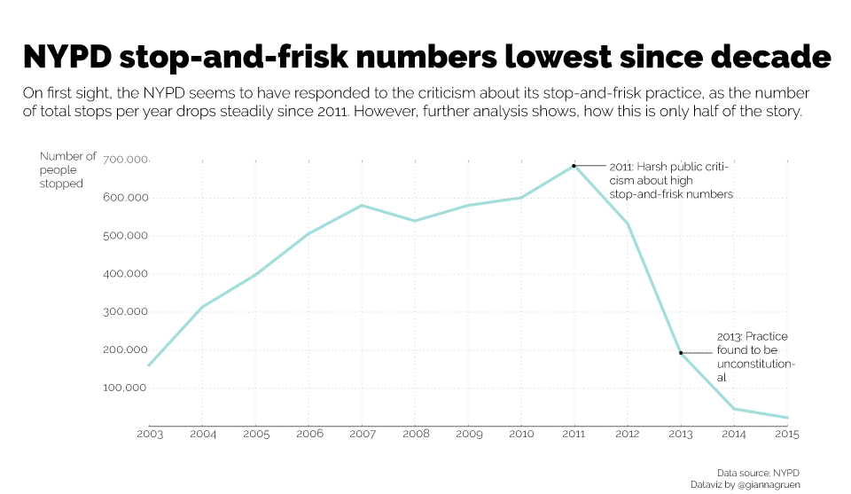
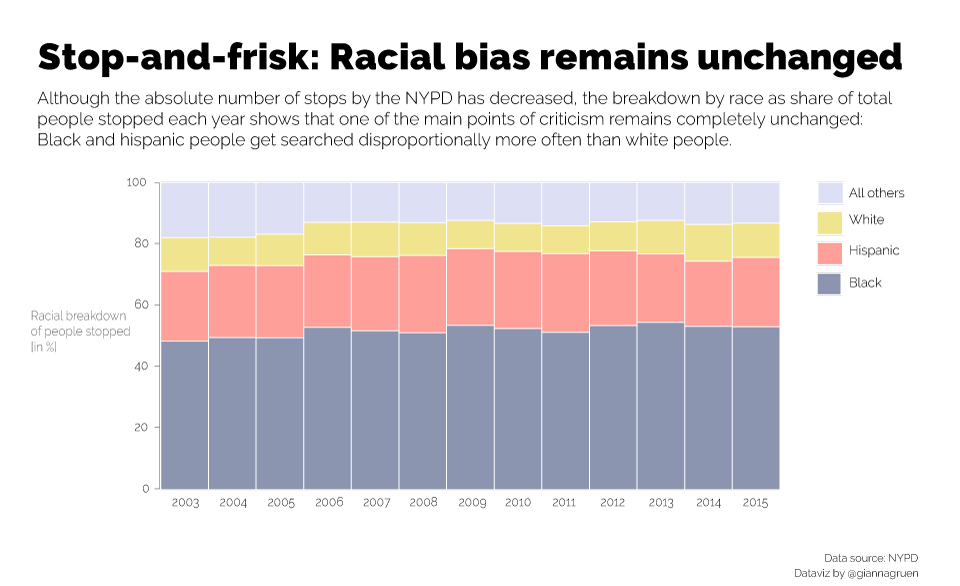
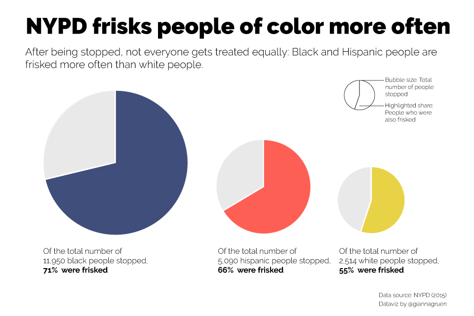

Arbitrary and racially biased: The NYPD's stop-and-frisk practice received a lot of criticism in the past. Data show a decline in practice, however the racial bias prevails.
After heavy criticism in 2011 and a 2013 ruling declaring NYPD's stop-and-frisk as unconstitutional, data proves a sharp decline of on the practice:
However, the racial bias - one of the critics' main argument - remains unchanged: Still black and hispanic people are stopped disproportionally more often than white people.
On top of that, after being stopped, black and hispanic people are also frisked more often than white people.
Each data-entry is assigned a "crime code description", suggesting what a person was stopped for. The five most frequent ones in 2015 are 'criminal possession of a weapon' (30% of stops), 'robbery' (14% of stops), 'grand larceny auto' (10% of stops), 'bulgary' (9% of stops), and 'assault' (6% of stops). The data records do not detail if stops are based suspicion of these crimes or based on evidence.
However, 2015 data suggest that out of 100 people stopped, only 17 would be arrested, whereas only 2 would be summonsed -- proving the point of the practice still being arbitrary. One possible reason might be that not yet all officers are aware of the reform, analysts argue.
If you are wondering what offenses people got arrested or summonsed for -- you unfortunately have to keep wondering: data on reasons for arrests and summons are gathered non-systematically.
Data Source: NYPD